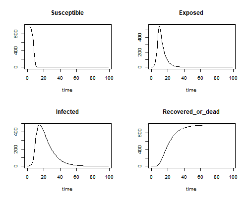

Designing a model to suit the pathogen
SPARKLE short course ‘Mathematical Modelling of Infectious Diseases’
Presenter: Emma McBryde, Australian Institute of Tropical Health & Medicine, James Cook University
Practice in building a model
- Separate into groups of about 4 to 6 people
- With facilitation from a tutor or demonstrator, write a model for HIV, a disease with lifelong carriage. The aim is to capture the different disease states and flows between them, like in the last session. You can propose a model question for example: as an infectious disease epidemiologist, you notice a recent spike in HIV notifications. You want to project the number of cases of AIDS and the need for treatment over the next few years. Build a model that may help with the epidemiological projections.
- Draw a diagram of a simple compartmental model and define the variables and parameters
- Write down the ODEs
- What would you do to improve/change this model for the next version? (No need to write the equations for this)
- Nominate a rapporteur for each group for presentation in this session
You might find the following diagram helpful: 
Upload your model diagram:
Model presentation and discussion
- Each group in turn will present their model diagram and equations
- While the other group members will troubleshoot the presented model for structural and mathematical errors
More practice
- Repeat this process for measles, a short-lived disease with lifelong immunity.
You might find the following diagram helpful: 
Upload your model diagram:
Introduction to a Shiny App
- Navigate to the folder
./student_materials/shiny_app_SEIRS_variations.R - Click “Run App”
If this doesn’t work, you can try the online version: https://emmamcbryde.shinyapps.io/SEIR_model/. You should see something like this: 
Examine the graphs that plot S, E, I and R over time for the default parameters.
- What kind of model is it?
Change the parameter for the basic reproduction number. What impact does this have on:
- The duration of the epidemic?
- The peak of infectious cases?
- The final proportion of susceptibles?
Change the parameter for latency duration. What impact does this have on:
- The duration of the epidemic?
- The peak of infectious cases?
- The final proportion of susceptibles?
Reduce the duration of immunity.
- What type of model have we now created?
- How does this impact on the number of susceptibles after a long time?
- How does this impact on the number of infectious after a long time?
- Why does the model have waves?
Examine the phase plane.
- What is it showing?
- Where is time on the phase plane?
- What corresponds to the waves in the phase plane?
Continue to change the parameters to try and simulate the different model types such as those pictured below.
Contributors
- Lisa White, Nuffield Department of Medicine, Oxford University
- Wirichada Pan-Ngum, Department of Tropical Hygiene, Faculty of Tropical Medicine, Mahidol University
- Emma McBryde, Australian Institute of Tropical Health & Medicine, James Cook University
- Roslyn Hickson, College of Public Health, Medical and Veterinary Sciences, and Australian Institute of Tropical Health & Medicine, James Cook University (and CSIRO)